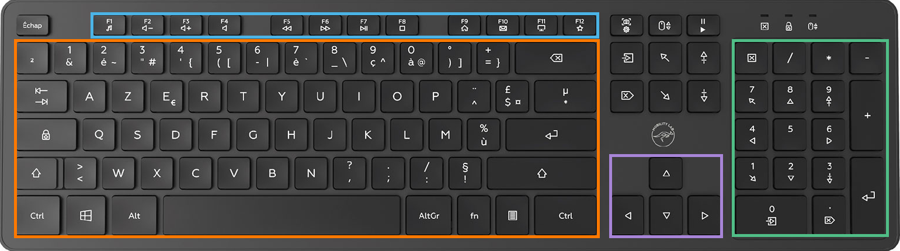
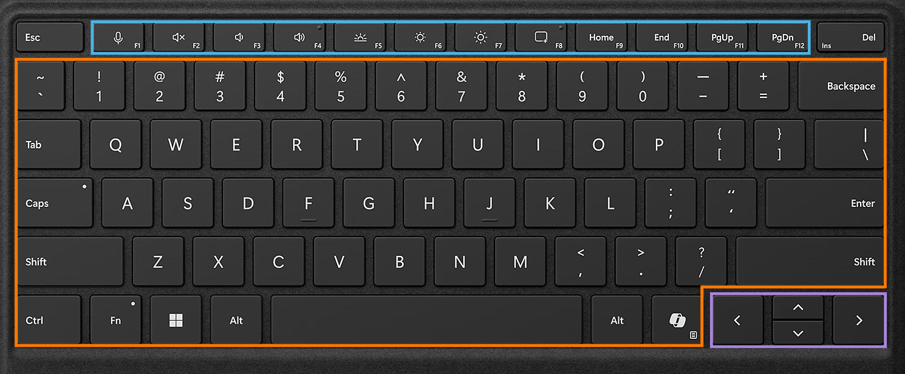

Découvrir les zones du clavier
Objectif : Repérer les 4 grandes zones du clavier et leurs fonctions
💡 Conseil important
Observez votre clavier et retrouvez chacune des zones décrites ci-dessous. Sur certains claviers compacts ou d'ordinateurs portables, le pavé numérique peut être absent : les signes de calcul se trouvent alors sur la rangée du haut ou accessibles via la touche Fn.
Les 4 zones du clavier
Zone orange - Les caractères
La zone principale avec les lettres, chiffres et symboles courants. C'est ici que vous tapez votre texte au quotidien.
La zone principale avec les lettres, chiffres et symboles courants. C'est ici que vous tapez votre texte au quotidien.
Zone bleue - Les touches de fonction
En haut du clavier, les touches F1 à F12. Sur les claviers modernes, elles servent aussi à régler le volume, la luminosité ou le Wi-Fi.
En haut du clavier, les touches F1 à F12. Sur les claviers modernes, elles servent aussi à régler le volume, la luminosité ou le Wi-Fi.
Zone verte - Le pavé numérique
À droite sur les grands claviers, il regroupe les chiffres et les signes de calcul : + - * /
À droite sur les grands claviers, il regroupe les chiffres et les signes de calcul : + - * /
Zone violette - Les flèches de direction
Les 4 flèches permettent de déplacer le curseur dans un texte ou de faire défiler une page, sans toucher la souris.
Les 4 flèches permettent de déplacer le curseur dans un texte ou de faire défiler une page, sans toucher la souris.
Aide visuelle

Clavier de bureau : les 4 zones sont bien visibles

Clavier de portable : le pavé numérique est absent